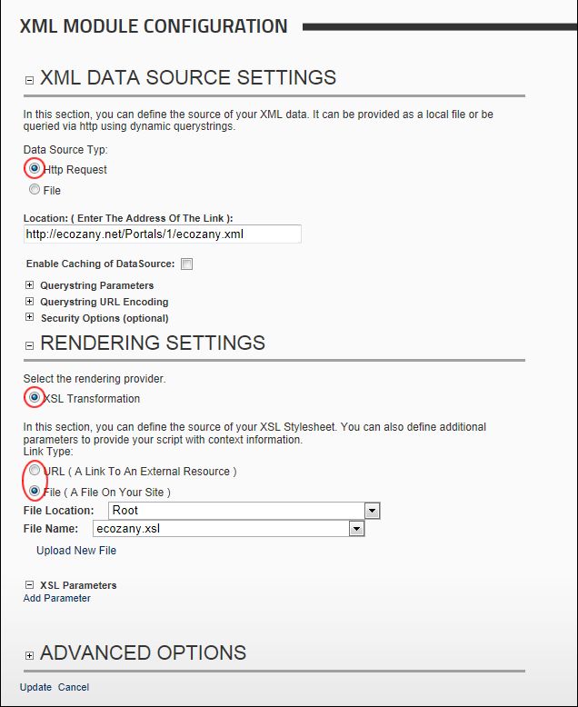

Creating a XML/XSL Transformation Using an External XML File
How to configure the basic settings required to create an XML/XSL transformation which is displayed as HTML inside the XML module. In the below example, both the XML and XSL files are located in the Digital Asset Management module that is located on the Admin > File Management page.
- Select
 Edit Module Configuration from the XML/XSL module actions menu. This opens the XML Module Configuration page.
Edit Module Configuration from the XML/XSL module actions menu. This opens the XML Module Configuration page.
- Maximize
 the XML Data Source Settings section.
the XML Data Source Settings section.
- At Data Source Typ, select Http Request:
- In the Location: ( Enter The Address Of The Link ) text box, enter the URL including the http:// prefix. Skip to Step 8 to use the default options and skip the optional settings.
- Optional. At Enable Caching of DataSource, select from these options:
- Mark
 the check box to cache the data within XML file. Select this option if the data doesn't change.
the check box to cache the data within XML file. Select this option if the data doesn't change. - Unmark
 the check box to disable caching. Select this option if the data changes regularly to ensure the current information is displayed.
the check box to disable caching. Select this option if the data changes regularly to ensure the current information is displayed.
- Optional. Maximize the Querystring Parameters section and create one or more query string parameters. See "Managing XML Query String Parameters"
- Optional. Maximize the Querystring URL Encoding section if you want to change the encoding from UTF 8 to either ASCII or Windows Default encoding. This option shouldn't need to be changed and is only included for legacy support.
- Optional. Maximize the Security Options (optional) section if a username/password is required to retrieve the XML file. For example, this will allow you access secure services that provide XML such as weather or stock prices services.
- In the Domain\username text box, enter the domain name or username given to you by the service provider.
- In the Password text box, enter the associated password.
- Go to the Rendering Settings section. The XSL Transformation radio button is selected by default.
- Set the link to the XSL file. See "Setting a URL Link", See "Setting a File Link" or See "Uploading and Linking to a File". Skip to Step 12 to skip the optional settings.
- Optional. Maximize the XSL Parameters section to add XSL parameters. See "Managing XML Query String Parameters"

- Optional. Maximize the Advanced Options section and set any of these optional settings:
- See "Setting XML/XSL Output to Download"
- See "Setting Query String Parameter Value Pair"
- See "Enabling/Disabling XML Search Indexing"
- Click the Update link.